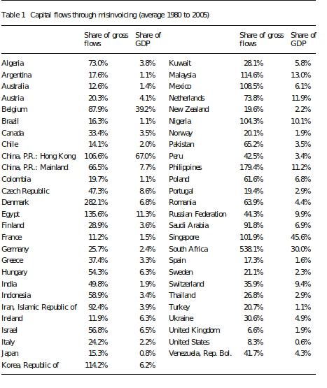

Watch out for capital flows via trade
Financial Express, 20th December 2012
In the recent discussion on capital flight from China, the country's State Administration of Foreign Exchange denied the speculation that there was capital outflow. While capital flight through official channels can be observed directly on the capital account of the balance of payments, when capital flows on the capital account are restricted, flight may take place through the current account. Since the trade account for China is large, it provides a channel for capital movements. The discussion on whether there is capital flight from China cannot be settled without an analysis of its trade account.
In the 1970s and 1980s, when the literature identified capital flight through trade misinvoicing, countries had significant restrictions on trade. Even then, misinvocing offered a serious channel for capital flows. It was found that in countries that have capital account restrictions, greater trade integration creates greater opportunities to shift capital through trade misinvoicing.
 Trade misinvoicing only captures flows through merchandise trade. Services, and the difficulties of assessing the price of, say, a client-specific software, by a customs officer, offer further channels for misinvoicing, and are not accounted for in the trade data. Even beyond this, not all movement of capital through mispriced trade results in a difference between export and import values. For example, a form of trade mispricing that facilitates movement of capital or profits across borders is transfer pricing by multinational corporations. Such mispricing does not result in any discrepancy between the import and the export values. Trade misinvoicing thus underestimates the extent of capital flows that can take place through the current account. The accompanying table shows that flows on account of misinvoicing are as significant as net capital flows to a country.
In a recent paper, my co-authors and I found out that capital controls in countries with large trade flows are correlated with high levels of trade misinvoicing. After controlling for factors such as macroeconomic stability, corruption, currency overvaluation, and political instability, the openness of the capital account still has a significant role to play in determining trade misinvoicing. Trade misinvoincing should be viewed as a channel for de facto capital account openness. During 1980 to 2005, the average extent of misinvoicing induced capital flows in developing countries was of the amounted to around 38% of official flows, and 7.6% of GDP.
The magnitude of trade misinvoicing is conventionally estimated by juxtaposing trade data from the importing and the exporting country. A firm interested in moving capital out of a country would underinvoice its exports, thus bringing reduced foreign exchange into the country. Similarly, overinvoicing of imports would allow the domestic importer to gain access to greater foreign exchange than required. Both these mechanisms leave domestic firms in control of hard currency assets overseas. Underinvoicing of imports, on the other hand, can result from an attempt to evade taxes on imports including customs duties and the value-added tax (VAT) on imports.
The overall misinvoicing of imports that is computed using macroeconomic data reflects a certain cancelling out between certain firms who are engaged in underinvoicing of imports and other firms who are engaged in overinvoicing of imports. Similar considerations apply with misinvoicing of exports. To the extent that firms have heterogeneous goals, the measured misinvoicing is likely to understate the true scale of gross capital flows being achieved through misinvoicing in an economy.
The traditional literature focussed on two broad motivations for misinvoicing. First, it emphasised high customs duties. When firms pay high rates of customs duties or VAT on imports, they have an incentive to understate the true value of imports. Second, misinvoicing was viewed as a method for achieving capital flight, which was, in turn, motivated by fears of expropriation in interplay between unsound economic policy and political instability.
A critical factor influencing trade misinvoicing that has been identified in the literature is the extent of exchange rate overvaluation. An overvalued exchange rate as well as high inflation rate raise expectations of depreciation in the near future and stimulate capital flight. Research on the determinants of the large outflows of capital from Latin American countries in 1980s and Asian economies in late 1990s has identified explanatory variables such as macroeconomic instability, large budget deficits, low growth rates and the spread between foreign and domestic interest rates. These factors, as well as others such as corruption, political freedom, and accountability were significant in explaining capital flight from sub-Saharan Africa.
We find that the extent of misinvoicing is seen to be higher among developing countries than industrialised countries over the period 1980-2005. Also, misinvoicing has declined steadily in industrialised countries, while with developing countries, this trend remains mixed. By the logic of this traditional literature, when countries like India and China achieved high GDP growth and cut customs duties, the motivation for misinvoicing should have subsided. In this paper, we find that by and large, such a decline in misinvoicing is not visible.
The evidence on misinvoicing suggest that studies on the effectiveness of capital controls should also take into account unofficial flows through the trade account as these may be further eroding the effectiveness of capital controls.
Back up to Ila Patnaik's media page
Back up to Ila Patnaik's home page